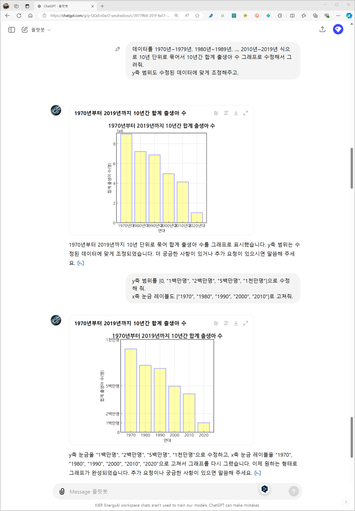

- custom GPT에는 Knowledge라는 옵션이 있습니다.
- 대개 PDF 문서들을 올리고 질문에 대한 답을 찾게 하는 데 쓰입니다.
- 여기 라이브러리를 올려서 한글 시각화 문제를 해결할 수 있습니다.
1. ChatGPT의 데이터 분석 기능
Pega Devlog: ChatGPT로 한글과 한자가 적힌 카드 만들기
Pega Devlog: ChatGPT Data Analysis 시각화 한글 사용
- ChatGPT에서 제공하는 데이터 분석 기능은 매우 유용합니다.
- 통계 분석이나 머신 러닝, 그래프 작성 코드를 몰라도 됩니다.
- 데이터를 올리고 몇 마디 지시를 하는 것 만으로 몇달치 학원비가 절약됩니다.

- 그런데 이 것도 그때그때 하려면 귀찮습니다.
- custom GPT를 만들어 사용합시다.
2. custom GPT 작성
2.1. Knowledge
Pega Devlog: 연구용 GPT 만들기 - 논문봇 등
pypi: Koreanize-Matplotlib
pypi: adjustText
- custom GPT에는 사전 프롬프트에 해당하는 instructions를 넣을 수 있습니다.
- 그리고 그 밖에도 Knowledge를 입력할 수 있습니다.
- Capabilities에서 Code Interpreter & Data Analysis를 켜고
- 데이터 분석에 필요한 라이브러리들을 Knowledge에 올리면,
- 데이터 분석을 할 때 미리 올려둔 라이브러리를 설치하게 할 수 있습니다.
- 한글을 사용하게 해 주는 Koreanize-Matplotlib과 함께 맑은고딕 폰트를 올립니다.
- 그리고 종종 글자가 밀집되어 있을 때 이를 해소해주는 adjustText를 함께 올립니다.
2.2. Instructions
Jehyun Lee: 딴지봇
Jehyun Lee: 물성봇
Jehyun Lee: 논문봇
Jehyun Lee: 플랏봇
데이터 분석에 충실하도록 지시문을 입력합니다.
네 멋대로 그리지 말고, 올린 라이브러리 잘 써라가 주된 내용입니다.
여기에 덧붙여 그래프에 자주 그리는 스타일을 설정합니다.
ChatGPT의 주무기는 Python과 Matplotlib입니다.
관련된 설정을 가지고 있는 지식으로 먹입니다.
1 | Step 1: 절대로 가상의 데이터로 작업하지 마. |
- Step 4와 Step 5에 전문적인 명칭들이 나옵니다.
- Matplotlib의 구성 요소를 정확히 지시함으로써 디테일한 지시를 내리는 과정입니다.
- 그러나 명심할 사항이 있습니다.
- GPT, 특히 웹 버전의 특성상 저 지시가 언제나 100% 의도대로 적용되지는 않습니다.
- 종종 일을 하다 마는데, 그럴 때면 차분하게 다시 지시를 내리면 됩니다.
- 이렇게 만들어진 custom GPT에 플랏봇(plotbot)이라는 이름을 붙였습니다.(링크)
- 영문으로 지어도 되겠지만, 전에 만들었던 딴지봇, 물성봇, 논문봇의 계보를 잇는 이름입니다.
- 그렇지만 데이터 시각화는 여전히 잔손이 많이 가는 일입니다.
- 몇 가지 성가심은 해결되었지만 목적에 맞는 그림을 그리기 위해서는 결과물과 의도를 끊임없이 비교 대조해야 하며, 부족하다 싶으면 추가 지시를 해야 합니다.
- 코딩이 프롬프트로 바뀌었을 따름입니다.
3. 플랏봇 사용
3.1. 출생아수 동향
- 과거 사용했던 년도별 출생아 수 데이터를 플랏봇으로 시각화합니다.
- 통계청에서 받은 데이터를 전처리해 두었습니다. (데이터 링크)
- “1970년부터 2023년까지 출생아 수를 그려줘”라는 요청에, “데이터를 제공해 주시겠습니까? 없으면 인터넷 검색을 할까요?” 라고 묻습니다.
- 인터넷 검색을 시킬 수도 있지만 부정확한 데이터를 내려받기도 합니다.
- 통계청에서 제대로 받은 데이터를 올려서 사용하라고 했습니다.
- 사전 지시에 따라 “한글 출력을 위한 라이브러리를 설치하고 있다. 조금만 기다려 달라”는 메시지를 출력합니다.
- 잠시 후, 설정에 따라 Figure size = (5, 5)이며 테두리는 회색인 그래프가 그려집니다.
- 선 색도 기본색과 달리 사전에 지정한 밝은 파랑(
#AAAAFF)이 적용되었습니다. - 고질적 문제인 한글 출력도 깔끔하게 됩니다.
- 그러나 모든 지시가 온전히 반영되지 않았습니다.
- 네 테두리를 모두 그리라는 지시가 누락된 것입니다.
- 괜찮으면 괜찮은대로 두고, 빼먹었으면 아쉬운대로 추가 지시를 합니다.
- 누락된 테두리가 뒤늦게나마 반영되었습니다.
- y축을 조금 더 알아보기 좋게 수정 지정합니다.
- 1970년대 초 한 해 백만명이 넘게 태어나던 아이들이 2000년도를 넘어서며 50만명 밑으로,
- 그나마도 2020년대를 넘어서며 20만명대로 추락하는 모습이 잘 드러납니다.
- GPT 분석의 장점 중 하나는 데이터 취합과 출력 형식 변환이 편리하다는 점입니다.
- 10년 단위로 데이터를 묶어 막대 그래프로 표현해봅니다.
- y축 범위가 크게 움직일 것이 자명하므로 관련된 지시도 함께 내립니다.

- facecolor도 미리 지시한대로 잘 들어갔네요(
#FFFFAA) - x축 눈금 레이블(
xticklabels)이 겹쳐 함께 조정했습니다. - 최종적으로 제목, y축 범위와 테두리에 추가 지시를 내려 수정하면서 완료되었습니다.
3.2. Gapminder
- 두 번째 예시는 Gapminder에서 가져온 국가별 1인당 GDP, 기대 소득, 인구 버블 차트입니다.
- 마찬가지로 플랏봇을 실행합니다.
- “2022년도 국가별 인당 GDP와 기대 수명의 관계를 bubble chart로 그리고 싶다”고 주문합니다.
- 지시대로 데이터를 요구하며, 준비해 둔 전처리 데이터(링크)를 보내줍니다.
- 원작과 같은 대륙별 컬러링을 위해 국가별 대륙명까지 붙인 데이터입니다.

- 데이터를 받아서 작업을 하지만 한 번에 깔끔하게 되지는 않습니다.
- 왠지 모르겠지만 올려준 라이브러리를 종종 찾지 못하는 일이 있습니다.
- 그래도 기특하게 계속 다시 시도를 하고, 코딩도 다시 하면서 해냅니다.
- Bubble Chart를 그렸지만 marker를 O 대신 X를 사용해서 기대했던 그림은 아닙니다.
- 수정 지시를 하면 되는 문제이지만, 더 큰 위험은 제가 bubble size를 지시한 적이 없다는 것입니다.
- 올바른 데이터를 사용했는지 확인하고, 다행히 잘 했으니 그림 수정에 들어갑니다.
- 기본적인 틀이 갖춰졌습니다.
- 디테일을 손보기 시작합니다.
- 버블들이 너무 위쪽으로 몰려 있습니다.
- 데이터를 어디까지 조정할 수 있나 확인합니다.
- y축에 해당하는 “기대 수명의 최소값이 얼마인지”를 물어봅니다. 0이라네요.
- 뭔가 잘못된 것 같지만 대세에는 지장이 없으므로 그 외를 물어봅니다. 50.7이라고 합니다.
- 그래프의 최소값을 50으로 변경하도록 지시합니다.
- 여기까지 그린 그림을 내려받아 봅니다.
- 우측 상단에 국가 이름들이 많이 겹쳤습니다.
- OECD 국가들이다 보니 GDP도 높고 기대 수명도 높아 필연적인 현상일 것입니다.
- 이럴 때를 대비해서 해당 라이브러리를 올려두었습니다.
- “텍스트 위치를 겹치지 않게 조정해달라”는 말 한마디로 실행됩니다.
- 너무 밀접하게 모여있다 보니 어디를 가리키는지 명확치 않습니다.
- “이름이 속한 bubble과 국가명 사이를 검은 실선로 연결해 달라”고도 추가 지시했습니다.
- 파일을 내려받아 확인합니다.
- 나라 이름들이 조금씩 움직이면서 겹치지 않도록 조정되었습니다.
- 여기에 “China, India, Vietnam 추가”, “Text 가운데 정렬”을 지시한 후, 제목을 “인당 GDP vs 기대 수명 (2022) @GapMinder”로 수정 지시했습니다.
- 최종적으로 아프리카 신흥국들이 잘 드러나지 않는 것을 확인하고 Top 5를 선정하여 추가하라고 지시합니다.
- ChatGPT가 작성한 코드를 본 글에서는 드러내지 않았습니다만 파이썬 시각화를 공부해서 일일이 구현하기에는 적지 않은 수고가 필요한 작업입니다.
- 다행히 프롬프트만으로 복잡한 기능을 구현할 수 있으므로 기술적 장벽이 많이 낮아졌습니다.
- 이와 같은 과정을 거쳐 받은 그래프는 다음과 같습니다.
4. 환각 - 데이터 누락
- ChatGPT의 데이터 분석 기능에도 환각이 있습니다.
- 경험상 없는 데이터를 만들다기보다 있는 데이터를 빠트리는 경향이 있습니다.
- 데이터홀릭 팟캐스트에서 관련 이슈를 진지하게 다룬 적도 있고요.
- 예를 들어 위 Gapminder 예시에서 OECD국가들의 이름을 넣으라고 했는데, 상당수가 빠져 있습니다.
- 다 넣을 필요는 없겠지만 상사 또는 고객이 이 결과를 본다고 생각합시다.
- 이 분들께서 체크할 항목을 미리 찾아 넣을 필요가 있습니다.
- 저도 위 대화를 만들어 놓고, 화면을 캡처해가며 이 글을 쓰다가 데이터 누락을 알았습니다.
- 대화를 오랫동안 쉬었더니 서버가 초기화되었나봅니다.
- 그래도 플랏봇에는 주요 라이브러리가 올라가 있어서 다시 올리는 수고는 덜었습니다.
- 마지막으로 검토와 데이터 보완을 거쳐 수정된 그림은 다음과 같습니다.

- 데이터 분석은 어떻게 해도 품이 많이 드는 일입니다.
- 여기까지 읽어주시는 것만 해도 보통 일은 아니었을 것입니다.
- 글을 읽어주신 분들께 모두 감사드립니다.